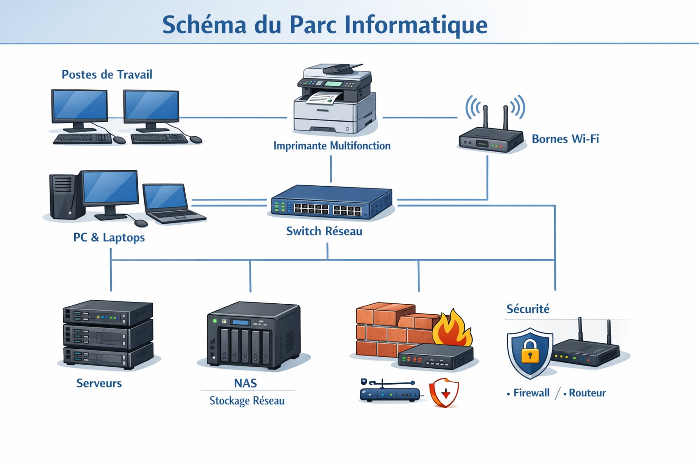

Bienvenue sur mon Projet Final
Spécialité SISR (Solutions d'Infrastructure, Systèmes et Réseaux)
Markush Ihor
Étudiant BTS SIO - Option SISR
À propos de mon profil
Passionné par l'informatique, je me suis orienté vers le BTS SIO SISR pour maîtriser les infrastructures réseaux. Mon objectif : devenir un expert en administration et cybersécurité.
Ma force réside dans ma curiosité pour l'automatisation et ma capacité à m'adapter aux nouvelles technologies.
Hauts Lieux de Formation
Lycée Marie Curie
Diplôme Visé : BTS SIO (SISR)
Acquisition de compétences critiques en administration systèmes, architecture réseaux sécurisés et supervision d'infrastructures. Environnement d'apprentissage basé sur des équipements industriels (Cisco, Dell, Stormshield).
Mon Parcours
BTS SIO Option SISR
Apprentissage de l'administration système et réseau, cybersécurité et automatisation (Infrastructure as Code).
Lycée Marie CurieBaccalauréat Bac Pro RISC
Obtention du bac avec mention bien . Initiation aux bases de l'informatique et du numérique.
Lycée AmpereÀ propos de moi
Passionné par l'informatique depuis toujours, je me suis naturellement orienté vers le BTS SIO option SISR pour transformer cette passion en expertise technique. Mon objectif est de devenir un administrateur systèmes et réseaux capable de concevoir et sécuriser des infrastructures modernes.
Curieux et rigoureux, j'accorde une importance particulière à la veille technologique et à l'automatisation (Ansible, Terraform), car je suis convaincu que l'avenir de l'infrastructure réside dans le code et l'agilité.
Mes compétences
Infrastructures & Réseaux
- Architecture Cisco (VLAN, Routage)
- Windows Server (AD, GPO)
- Monitoring (Zabbix, SNMP)
- Services Réseaux (DNS, DHCP, SSH)
Systèmes & Virtualisation
- Administration Linux (Debian)
- Virtualisation (VMware, Proxmox)
- Scripting (PowerShell, Bash)
Cybersécurité
- Pare-feu (PfSense, Fortinet)
- VPN (IPsec, OpenVPN)
- Analyse de trames (Wireshark)
- Sécurisation des accès (SSL)
Mes Projets & Réalisations
Déploiement Active Directory
Mise en place d'un domaine Windows Server 2022 avec gestion des GPO et serveurs DNS/DHCP redondants.
Voir la documentationSegmentation VLAN & Routage
Architecture réseau sécurisée avec segmentation par VLANs et filtrage par ACL sur équipements Cisco.
Détails techniquesInstallation Pare-feu pfSense
Mise en œuvre d'un Firewall pfSense avec VPN nomade OpenVPN et filtrage de contenu (Squid).
Étude de casArchitecture Réseau de l'Entreprise

Topologie & Sécurisation
Analyse de la topologie en place pour comprendre l'interconnexion entre le cœur de réseau et les différents services.
Isolation des flux Administration, Data, et VoIP pour limiter la surface d'attaque.
Double filtrage via pfSense et mise en place d'une DMZ pour les serveurs exposés.
Virtualisation sous Proxmox avec réplication des données et backups automatisés.
Intéressé par mon profil SISR ?
Retrouvez le détail de mes missions et compétences validées ci-dessous.
Veille Technologique
Thème : L'automatisation des processus d'infrastructure
Ma veille porte sur les outils et méthodes permettant d'automatiser le déploiement, la configuration et la gestion des parcs informatiques et des réseaux...
Mes outils de veille :
Sujets surveillés récemment :
Ansible & Terraform
L'essor de l'Infrastructure as Code pour déployer des serveurs en quelques secondes.
PowerShell & Bash
Optimisation des tâches d'administration Active Directory via scripts.
Docker & Conteneurisation
L'automatisation du déploiement d'applications isolées.
Répartition de mes Compétences
Cliquez sur une section
Sélectionnez un domaine sur le graphique pour voir le détail.
Me Contacter
Restons en contact
Besoin d'un alternant ou d'un collaborateur ? Mon profil vous intéresse ? Contactez-moi directement via ces plateformes ou le formulaire :